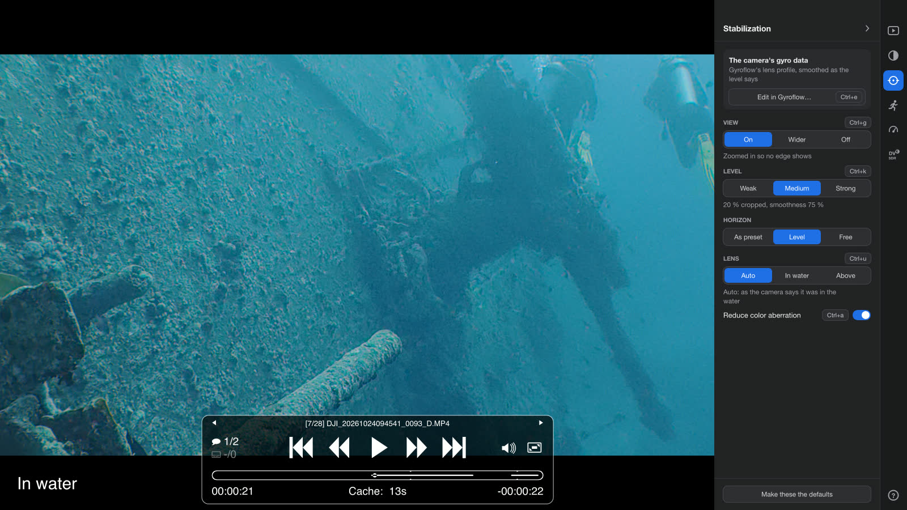

为潜水和浮潜爱好者打造
水下也稳定。今晚就在每个人的手机上。
在水下，相机的防抖会失灵。把它关掉，Action Footage Player 就会在播放时让潜水画面稳定下来：依据相机自己记录的运动数据，呈现你亲眼看到的光线，并在屏幕上显示深度。标出那只海龟，按一个键，晚饭前就能用 AirDrop 发出去发到每个人的手机上。
潜水视频为何总让人失望
相机拍到了。难的是把它找回来。
开着防抖，照样晃
相机内置防抖是为陆地设计的。在水下它会误判运动，片段就晃个不停。每个潜水员都见过。
要么灰蒙蒙，要么平淡无奇
用 Log 拍，每段片段都是灰的。用普通模式拍，明亮的水面和昏暗的珊瑚礁被挤进同一幅平淡的画面。
想修好，得靠剪辑软件和一整晚
调色和防抖通常意味着剪辑软件、每段片段一个工程，还有漫长的渲染。大多数潜水视频从来没等到这一步。
海龟藏在一小时的蓝色里
等相机的 App 把片段复制、转换完，你又找到那一分钟，大家早就聊别的了。
潜水之后的那个晚上
双击片段。播放出来，就是潜水时的样子。
不用导入，不用调色，也不用先渲染。一切都在播放时完成，你的原始文件永远不会被修改。
-
水下也稳定
关闭相机的防抖后，播放器会根据相机记录的运动让片段稳定下来，并校正水对光线的折射。水在画面边缘造成的彩色镶边也会一并去掉。
-
你看到的光线，无需调色
Log 素材直接以 HDR 播放：明亮的水面和珊瑚礁上的阴影都保留细节。不添加任何风格，曝光保持你拍摄时的样子。
-
屏幕上的深度
在 Osmo Action 6 上，深度以及相机是否在水中会叠加显示在画面上。装在潜水壳里时，相机测不了深度，但入水状态依然会显示。
-
直接跳到海龟
潜水时按下相机的精彩标记按钮，标记就会出现在进度条上。Ctrl+] 跳到下一个。
-
那一刻的干净静帧
暂停并按 Ctrl+p：这一帧会用前后的帧重新合成，噪点和水中的悬浮颗粒大多会消失。
-
留住重要的瞬间
在开头按 l，在结尾按 l，再按 k，然后给它起个名字。它会以一个小文件保存在这次旅行的
Moments文件夹里，在访达（Finder）文件资源管理器里就能看到，而且是彩色的。 -
当晚就分享
Shift+E 把这一段变成一个文件，画面稳定、色彩完整，iPhone 和 Mac 都能正确显示。在 Mac 上导出的文件带有 Dolby Vision 信息，iPhone、iPad 和 Mac 会利用它，在没有 HDR 的屏幕上也显示得很好。

实测数据，不是空口承诺
稳定，而且经过实测。
循环视频就是证明：同一段潜水，左边是相机录下的样子，右边是在这里播放的样子。默认设置就是为水下准备的，什么都不用设置。
帧间残留抖动，单个测试片段
校正了水对光线的折射后，残留抖动约为按陆地方式防抖时的八分之一。Osmo Action 6，关闭 EIS，单个测试片段。
潜水员常用的相机
我的相机能用吗？
已用 DJI Osmo Action 6 在真实潜水中测试，并在 GoPro HERO12 Black 上验证过。其他相机都已适配，应该可以用。发一段你相机拍的短片段，就能帮它完成测试。
| 相机 | Log | 防抖 | 说明 |
|---|---|---|---|
| DJI Osmo Action 6 | 已验证 D-Log M | 已验证 关闭 EIS | 深度、入水状态和精彩标记。已在真实潜水中测试。 |
| DJI Osmo 360 | 应该可用 D-Log M | 应该可用 关闭 EIS | 单镜头 MP4。 |
| GoPro HERO12 Black、HERO13 Black | 已验证 GP-Log | 已验证 关闭 HyperSmooth | 已在 HERO12 Black 上验证。GP-Log 需固件 1.20 或更高版本。 |
| GoPro MISSION 1、MISSION 1 PRO | 应该可用 GP-Log2 | 应该可用 关闭 HyperSmooth | |
| GoPro MAX2 | 尚不支持 GP-Log | 应该可用 关闭 HyperSmooth | 它的 GP-Log 曝光比 HERO 系列亮两档，需要单独的转换；在此之前，可用 Ctrl+l 手动套用 GP-Log，但画面会偏亮。 |
| GoPro HERO5 Black 至 HERO11 Black | 无 Log | 应该可用 关闭 HyperSmooth | Flat 不是 Log。 |
| DJI Osmo Action 4、Action 5 Pro | 应该可用* D-Log M | 应该可用 关闭 EIS | * 用 Ctrl+l 手动选择 D-Log M。 |
| Insta360 单镜头相机 | 应该可用* 10-bit I-Log | 应该可用 关闭 FlowState | * 用 Ctrl+l 手动选择 I-Log。不支持 8-bit I-Log。 |
已验证 已在播放器中用真实素材播放过。应该可用 已根据厂商公开的元数据或示例片段做了适配，但尚未用真实素材验证。应该可用* 同上，但需要一步手动操作，具体见该行说明。尚不支持 目前还不能用。
你用的相机标着「应该可用」？在 GitHub issue 里附上一段简短的示例片段，是让它通过验证的最快方式。
下次下水之前
相机上改两个设置。之后双击一下就行。
设置一次，之后的每次潜水都会稳定、彩色地播放。
-
把色彩模式设为 Log
DJI 用 D-Log M。GoPro HERO12 Black（固件 1.20 或更高版本）和 HERO13 Black 用 GP-Log。Insta360 用 10-bit I-Log：不支持 8-bit I-Log。GoPro 的 Flat 不是 Log，HERO8 至 HERO11 没有 Log。你的相机没有 Log？跳过这一步：防抖照样有效。
-
关闭相机的防抖
DJI 关 EIS，GoPro 关 HyperSmooth，Insta360 关 FlowState。相机已经防抖过的片段会按原样播放。
-
直接从存储卡复制片段
被 App 剪切或导出过的片段，会丢失播放器用来防抖的运动数据。
-
双击一段片段
就这样。
白平衡：照你平常的方式设置就好。播放器呈现的就是录下的样子。
潜水员常问的问题
下载之前，先看看这些。
我只浮潜，适合我吗？
适合，甚至更有意义。靠近水面时，阳光与阴影的反差最强烈，相机还会随着每一道波浪晃动。这两点正是 Action Footage Player 要解决的问题。
我用 Flat 拍摄，那是 Log 吗？
不是。GoPro 的 Flat 只是更平淡的画面，并不是 Log 记录，所以会按录制的样子播放，不做 HDR 转换。GoPro 的 Log 是 GP-Log，在 HERO12 Black（固件 1.20 或更高版本）和 HERO13 Black 上才有；HERO8 至 HERO11 没有。
关闭 HyperSmooth、用 Flat 拍的片段，照样能稳定播放。
装在潜水壳里也能用吗？
能。防抖和色彩的效果都一样。装在潜水壳里时，相机测不了深度，因为它的气压传感器只能感受到壳内的空气，所以不会显示深度。在 Osmo Action 6 上，相机是否在水中依然会显示。
水面以上的镜头怎么办？
在 Osmo Action 6 上，针对水的校正会跟随相机自己记录的入水状态，所以一段时而入水、时而出水的片段，只有在水下的部分才会被校正。
在水面以上，相机自带的防抖效果很好，那时可以开着它。对于在空气中关闭防抖拍摄的片段，按 Ctrl+u 可以关掉针对水的校正。
我需要 HDR 屏幕吗？
不需要，但有了更好。较新的 iPhone、MacBook Pro、HDR 电视和显示器能呈现 Log 记录下的一切。在 Apple 设备上，潜水画面在普通屏幕上也很好看，无论是在播放器里，还是你导出的片段。在其他一些手机、电脑和电视上，导出的片段看起来可能略平淡一些。
防抖和深度读数在任何屏幕上都有用。
它能找回深处丢失的红色吗？
不能。红光在到达相机之前就被水吸收了，Action Footage Player 呈现的是实际录下的画面，只是保留了完整的动态范围。要找回红色，需要红色滤镜、潜水灯、在相机上调白平衡，或者事后做色彩校正。
相机的手机 App 不是已经能以 HDR 显示我的潜水视频了吗？
有些 App 确实可以。但它们的 HDR 模式往往会随场景变化重新调整曝光，并把深色阴影压成纯黑，这是为社交媒体打造的风格。在水下，这一点格外明显：珊瑚礁上的阴影变成一片黑，亮度随着你的游动忽明忽暗。
Action Footage Player 保留相机记录的曝光和阴影中的细节。它导出的文件同样不添加任何风格，你仍可以按自己的喜好调整。烙进文件的风格，是去不掉的。
我以前的潜水视频会变好看吗？
关闭 EIS 拍摄的片段，直接从文件夹里打开就能稳定播放：不渲染，也不复制。用 Log 拍摄的片段会以 HDR 播放。用普通模式并开着防抖拍摄的片段，看起来还是老样子：Action Footage Player 无法添加当时没有录下的东西。
它会修改我的原始文件吗？
不会。Action Footage Player 只读取它们。导出的文件存放在单独的 Exports 文件夹中，你保留的瞬间存放在 Moments 文件夹中，视频文件本身永远不会被写入。
有 Windows 版吗？
有，支持 Windows 10 和 11。Mac 版是日常在用的版本；Windows 版也能用，但还是 alpha 版，测试得不多。
免费吗？
是的，以 GPL-3.0 协议开源。不会锁定任何功能，也无需注册账号。